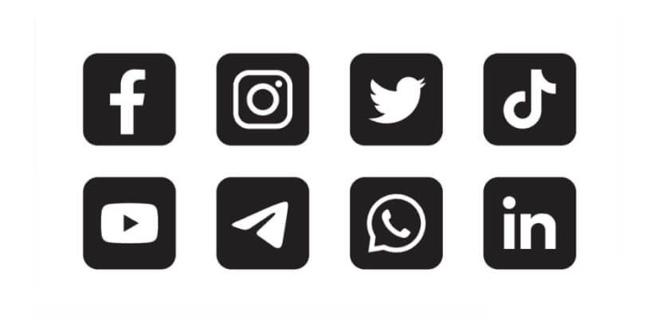

KATTE-MEMES
Hvorfor de er bra for verden



Hvorfor katte-memes er bra
Katte-memes har vært på internett for flere år, og det vil forsette å bli lagd mer. Mange folk i dag sier at de ikke er kule og trendy, at de bare er irriterende og skummel. Dette er usant, de er søte og unike og de har et spesielt sted innenfor mitt hjerte. De er noe som gjør meg i godt humør når jeg føler meg nede, pluss at det finnes millioner av de som betyr at jeg har alltid noe nytt å finne.

Tok internett med storm
Når katte-memes og videoer kom, så ble internett tatt med storm. De kom i forskjellige varianter, fra redigerte bilder til videoer av dem som blir skremt av en agurk. De ble populære og morsomme å se på, og hvis ikke det hadde vært for katte-memes så ville ikke for eksempel YouTube finnes.